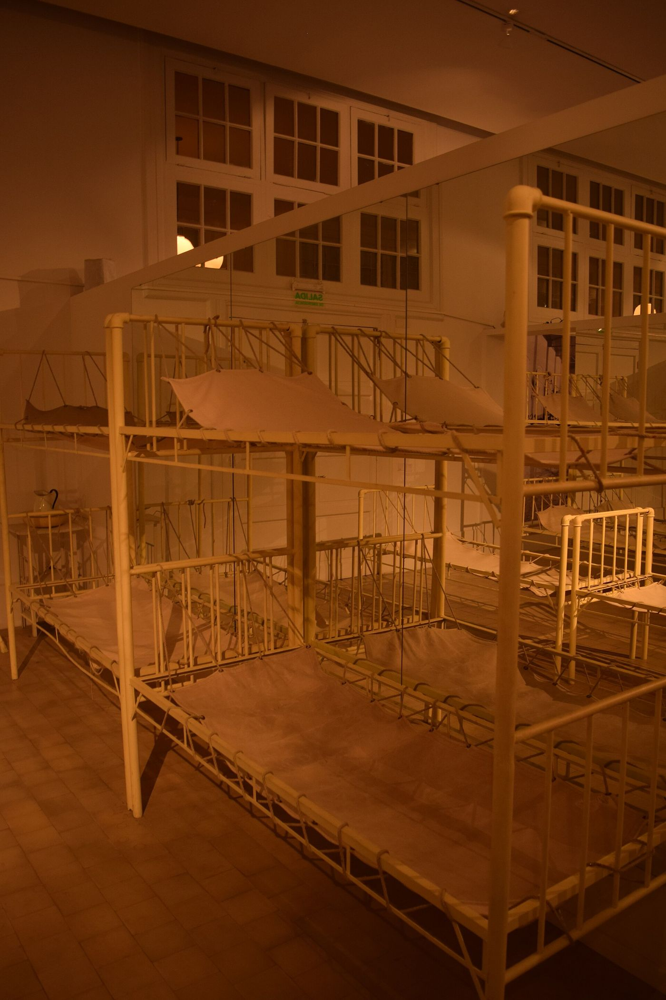

Nace Villa María
La ciudad se funda en un cruce de caminos y rieles. El ferrocarril y la colonización agrícola atraen a miles de inmigrantes europeos, entre ellos muchas familias piamontesas.
Memoria y origen
Del Piamonte a la pampa gringa, de Génova a Villa María. La historia de la colectividad piamontesa es la historia de miles de familias que trajeron una lengua, una cocina y una manera de estar en el mundo.

01 · El origen
Entre fines del siglo XIX y las primeras décadas del XX, el Piamonte fue una de las regiones que más emigrantes aportó a la Argentina. Desde los valles de Cuneo, las colinas del Monferrato y las ciudades de Turín, Alessandria, Asti y Novara, miles de familias partieron hacia el puerto de Génova y cruzaron el Atlántico.
Muchas se instalaron en la pampa gringa, donde el ferrocarril y la colonización agrícola abrieron trabajo. Villa María, fundada en 1867, fue un cruce de rieles y caminos; a su alrededor crecieron colonias y pueblos con apellidos piamonteses.
La colectividad mantuvo la lengua, la cocina y las devociones. Pero con las generaciones, muchas de esas palabras y recetas empezaron a quedar solo en la memoria de los mayores. La asociación nació, en buena medida, para que eso no siguiera pasando.
“La memoria no es lo que se guarda: es lo que se transmite.”
02 · Los hitos
Estas son algunas de las marcas de la colectividad piamontesa en Villa María. La línea de tiempo se amplía con cada documento, foto o recuerdo que las familias comparten.
La ciudad se funda en un cruce de caminos y rieles. El ferrocarril y la colonización agrícola atraen a miles de inmigrantes europeos, entre ellos muchas familias piamontesas.
Desde el norte de Italia parten familias enteras hacia la Argentina. Traen la lengua, la cocina, la música y una cultura del trabajo que transforma la pampa.
El 16 de marzo se crea la Asociación Civil Familia Piamontesa de Villa María. Un grupo de descendientes, entre ellos Lorenzo Gastaldi, impulsa un espacio para reunir a las familias y sostener la cultura.
Villa María y Savigliano, en la provincia de Cuneo, firman su hermanamiento. La ciudad piamontesa se convierte en un puente concreto con la tierra de los antepasados.
El 28 de noviembre, la lengua piamontesa es declarada patrimonio cultural intangible de Villa María (Ordenanza 7.961/2023), con impulso de la FAPA y de representantes de la asociación.
La asamblea del 13 de noviembre renueva las autoridades: Carlos Polliotto como presidente, Oscar Trucco como vicepresidente y Lorenzo Gastaldi como tesorero.
La asociación celebra casi tres décadas de vida con una agenda abierta: cultura, lengua, arquería, gastronomía y solidaridad. La historia sigue escribiéndose.
03 · La lengua
El piamontés —piemontèis— es una lengua románica del norte de Italia, con literatura, teatro y canción propias. No es un dialecto del italiano: tiene su propia gramática y una tradición que se remonta a siglos.
En Villa María, la lengua fue declarada patrimonio cultural intangible en 2023. La iniciativa surgió de la Federación de Asociaciones Piamontesas de Argentina (FAPA) y fue presentada en el Concejo Deliberante por el cónsul honorario de Italia, Matías Bossa, y representantes de la asociación.
La declaración no es solo un reconocimiento: es una herramienta para enseñar, editar libros, hacer teatro y que las nuevas generaciones puedan leer lo que sus antepasados no pudieron escribir.

04 · El puente
Savigliano es una ciudad de la provincia de Cuneo, en el Piamonte, con una fuerte tradición ferroviaria y agrícola. En 2003, Villa María y Savigliano firmaron su hermanamiento: un gesto que convirtió la memoria familiar en un vínculo institucional.
En 2023, al cumplirse 20 años, la ciudad recordó ese lazo con un acto en el monumento al hermanamiento, en la esquina de Dante Alighieri y Reconquista. Allí se descubrió una placa y se evocó la cápsula del tiempo enterrada en la plaza San Martín, que se abrirá en 2033.
El hermanamiento sigue vivo en intercambios, visitas y proyectos culturales. Es una de las formas más concretas de mantener el vínculo con la tierra de los antepasados.
05 · El archivo
Un archivo abierto a las familias. Si tenés fotos, documentos o relatos, podés sumarlos: cada pieza ayuda a reconstruir la historia de la colectividad.


06 · Archivo y fuentes
Este relato se apoya en documentos, notas periodísticas y en la memoria de las familias. Las fechas y los datos pueden corregirse y ampliarse con nuevos aportes.
Las imágenes de archivo pertenecen a sus autores y se utilizan con licencias libres. Ver créditos y fuentes.